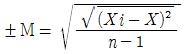

폐기물처리산업기사 (2005-03-20 기출문제)
1과목: 폐기물개론
1. 인구 2,000,000인 도시에서 1일 1인당 1.8kg의 쓰레기가 발생하고 있다. 1년동안에 발생한 쓰레기의 총 부피는? (단, 쓰레기 밀도는 0.45kg/L이며 인구 및 발생량 증가 압축에 의한 변화는 무시한다.)
- 1,820,000m3/년
- 2,270,000m3/년
- 2,920,000m3/년
- 3,370,000m3/년
(정답률: 알수없음)

2. 폐기물 발생량 조사 방법과 가장 거리가 먼 것은?
- 에너지수지법
- 물질수지법
- 적재 차량 계수 분석법
- 직접계근법
(정답률: 알수없음)
3. 슬러지 건조시 가장 증발이 어려운 수분은?
- 간극모관결합수
- 모관결합수
- 표면부착수
- 내부수
(정답률: 알수없음)
4. 다음 중 Trommel screen의 선별효율에 영향을 주는 인자가 아닌 것은?
- 직경
- 압력
- 경사도
- 회전속도
(정답률: 알수없음)
5. 쓰레기의 성상분석에서 일반적으로 가장 먼저 이루어지는 절차는?
- 건조
- 절단 및 분쇄
- 분류
- 밀도측정
(정답률: 알수없음)
6. 적환장을 설치하는 경우와 가장 거리가 먼 것은?
- 슬러지수송이나 공기수송방식을 사용할 수 없는 경우
- 불법투기가 발생하는 경우
- 작은 용량의 수집차량을 사용하는 경우
- 작은 규모의 주택들이 밀집되어 있는 경우
(정답률: 알수없음)
7. 제품의 원료단계에서부터 제조, 유통, 소비, 폐기시의 전과정을 평가하여 오염부하량 등을 계산, 평가하는 기법은?
- ISO
- LCA
- EPA
- TRA
(정답률: 알수없음)
8. 직경이 3m인 Trommel screen의 임계속도는?
- 24rpm
- 32rpm
- 36rpm
- 48rpm
(정답률: 알수없음)
9. 폐기물 처리의 기본 개념과 가장 거리가 먼 것은?
- 감량화
- 무해화
- 자원화
- 안정화
(정답률: 알수없음)
10. 쓰레기 발생량 예측모델 중 시간과 다른 영향인자들을 동시에 고려해서 모든 인자를 시간에 대한 함수로하여 예측하는 방법은?
- 동적모사모델
- 다중희귀모델
- Trend법
- CORAP 모델
(정답률: 알수없음)
11. 어느 폐기물의 조성을 알아보니 수소(H)와 탄소(C)로만 되어 있었다. 밀폐 반응조에서 순 산소로 완전연소시킨 후, 배가스의 중량조성비를 알아보니 CO2 66%, H2O 27%, O2 7% 이었다. 이 폐기물은 다음 중 어느 것인가?
- C2H4
- CH4
- C2H2
- C3H8
(정답률: 알수없음)
12. 다음 중 분뇨 수거효율이 제일 높은 것은?
- 1.0 MHT
- 2.0 MHT
- 3.0 MHT
- 4.0 MHT
(정답률: 알수없음)
13. 함수량이 각각 90%, 70% 인 하수슬러지를 무게비 3 : 1 로 혼합하였다면 하수슬러지의 함수량은 몇 % 인가?
- 80
- 83
- 85
- 87
(정답률: 알수없음)
14. 열분해에 의한 에너지회수법과 소각에 의한 에너지 회수법을 비교하였을 때 열분해에 의한 에너지회수법의 장점이 아닌 것은?
- 저장 및 수송이 가능한 연료를 회수할 수 있다.
- NOx의 발생량이 적다.
- 감량비가 크며, 잔사가 안정화된다.
- 발생되는 배기가스량이 적어 가스처리장치가 소형이어도 된다.
(정답률: 알수없음)
15. 고형분이 45%인 주방쓰레기 10톤을 소각하기 위해 함수율이 15%되도록 건조시켰다. 이 건조 쓰레기의 중량은?
- 2.5톤
- 3.5톤
- 4.7톤
- 5.3톤
(정답률: 알수없음)
16. 쓰레기 조사에서 전수조사의 장점이 아닌 것은?
- 조사기간이 짧다.
- 표본오차가 적다.
- 이용도가 높다.
- 보정이 가능하다.
(정답률: 알수없음)
17. 밀도가 600kg/m3인 쓰레기 5톤을 압축시켰더니 처음 부피보다 60%가 줄었다. 이 때 압축비는?
- 2.5
- 3
- 3.5
- 4
(정답률: 알수없음)
18. 폐기물 관리에 있어 가장 중요시 되며 우선 고려되어야 할 사항은?
- 재활용
- 재사용
- 처리비용
- 감량화
(정답률: 알수없음)
19. 도시폐기물의 해석에서 Rosin-Rammler model에 대한 설명으로 가장 거리가 먼 것은? (단, Y = 1 - exp[-(x/xo)n] 기준)
- 도시폐기물 입자의 밀도분포에 관한 모델식이다.
- Y는 크기가 x 보다 작은 폐기물의 총 누적무게분율이다.
- xo는 특정입자 크기를 의미한다.
- 특정입자크기는 입자의 무게기준으로 63.2%가 통과할 수 있는 체의 크기이다.
(정답률: 알수없음)
20. 파쇄에 의해 쓰레기 비표면적을 증가시킴으로써 얻어지는 이점과 가장 거리가 먼 것은?
- 미생물의 작용이 촉진된다.
- 연소효율을 향상시킬 수 있다.
- 열분해 반응이 촉진된다.
- 취성도가 커진다.
(정답률: 알수없음)
2과목: 폐기물처리기술
21. 오염된 토양의 처리법 중 토양세척법과 가장 거리가 먼 것은?
- Steam/고온수법
- 전자수용체 주입법
- 계면활성제법
- 용제법
(정답률: 알수없음)
22. 열분해공정이 소각에 비해 갖는 장점이 아닌 것은?
- 황분, 중금속이 Ash중에 고정될 확률이 낮다.
- 환원성 분위기로 Cr+3가 Cr+6로 변화하지 않는다.
- 배기가스량이 적다.
- NOX 발생량이 적다.
(정답률: 알수없음)
23. 수거분뇨(收去糞尿)중의 협잡물(狹雜物)은 다음 어느 것으로 제거(除去)하는가?
- Decanter
- Drum Screen
- Filter Press
- Vaccum Filter
(정답률: 알수없음)
24. 폐기물내의 수분, 불순물, 재, 입자크기 등을 조절하고 물리적으로 가공하여 연료화하는(한) 것은?
- RDF
- Pyrolysis
- Gasification
- Solidification
(정답률: 알수없음)
25. 소화슬러지의 발생량은 1일 투입량의 10%이다. 소화 슬러지의 함수량 95%라고 하면 1일 탈수된 슬러지의 양은? (단, 슬러지의 비중은 1.0 이고, 분뇨투입량은 100㎘/day 이며, 탈수슬러지의 함수율은 75%이다.)
- 5m3
- 3m3
- 2m3
- 4m3
(정답률: 알수없음)
26. 열분해에 대한 설명으로 옳지 않은 것은?
- 공기가 부족한 상태에서 폐기물을 연소시켜 가스, 액체 및 고체상태의 연료를 생산하는 공정을 말한다.
- 저온열분해의 온도범위는 대략 500~900℃이다.
- 고온에서는 타르, char 및 액체상태의 연료, 저온에서는 가스 상태의 연료가 많이 생성된다.
- 열분해의 운전요소에는 가열속도, 폐기물의 성질 및 운전온도 등이 있다.
(정답률: 알수없음)
27. 어느 분뇨처리장에서 8㎘/일의 분뇨를 처리하며 여기에서 발생하는 가스의 양은 투입분뇨량의 8배라고 한다면 이 중 CH4가스에 의해 생성되는 열량은? (단, 발생가스중 CH4가스가 75%를 차지하며, 열량은 4,000 ㎉/m3-CH4이다.)
- 32,000㎉/일
- 64,000㎉/일
- 192,000㎉/일
- 256,000㎉/일
(정답률: 알수없음)
28. 일반적으로 폐기물 파쇄시 적용되는 작업지수(kWh/ton, 입자직경의 80%를 100㎛이하로 줄일 때 소요되는 일 양)가 가장 큰 공업용 재료는?
- 광재
- 석탄
- 유리
- 자갈
(정답률: 알수없음)
29. 유해폐기물을 고화처리한 후 적정처리여부를 시험 또는 조사하는 항목으로 가장 거리가 먼 것은?
- 압축강도
- 투수율
- 내염성
- 용출시험
(정답률: 알수없음)
30. 시멘트 고형화법 중 시멘트 기초법에 대한 설명으로 옳지 않은 것은?
- 고농도의 중금속 폐기물에 적합하다.
- 시멘트 혼합과 처리기술이 잘 발달되어 있고 특별한 기술이 필요없다.
- 사용되는 시멘트의 양을 조절하여 강도를 조절할 수 있다.
- 흔히 탈수장치가 필요하며 최종처분물질의 양은 증가하지 않는다.
(정답률: 알수없음)
31. 슬러지중에 포함되어 있는 물의 형태에 대한 설명으로 옳지 않은 것은?
- 모관결합수 : 슬러지 입자의 갈라진 틈을 채우고 있는 수분의 형태로 모세관 현상에 의하여 부착되어 있다.
- 간극모관결합수 : 슬러지의 입자 자체가 함유하고 있는 소량의 수분으로 탈수가 어렵다.
- 표면부착수 : 미세슬러지의 입자 표면에 부착되어 있는 수분을 지칭한다.
- 내부수 : 슬러지의 입자를 형성하는 세포의 세포액으로 존재하는 수분을 말한다.
(정답률: 알수없음)
32. 탄소, 수소 및 황의 중량비가 83%, 14%, 3%인 폐유 1kg을 소각시키는데 필요한 이론공기량(Sm3)은?
- 8.9
- 9.4
- 10.3
- 11.2
(정답률: 알수없음)
33. 6가 크롬을 함유한 침출수의 처리공정으로 가장 알맞은 것은?
- 침출수-화학적산화-화학적침전-응결-침전-방류
- 침출수-화학적환원-화학적침전-응결-침전-방류
- 침출수-화학적침전-화학적산화-응결-침전-방류
- 침출수-화학적침전-화학적환원-응결-침전-방류
(정답률: 알수없음)
34. 소화슬러지의 발생량은 투입량(100㎘)의 10%이며 함수율이 95%이다. 탈수기에서 함수율을 70%로 낮추면 cake의 부피는 얼마인가? (단, 슬러지의 밀도는 1kg/ℓ이다.)
- 1.7m3
- 2.4m3
- 3.9m3
- 7.2m3
(정답률: 알수없음)
35. 1일 쓰레기 발생량이 50t인 도시의 쓰레기를 깊이 2.5m의 도랑식(trench)으로 매립하는데, 쓰레기 밀도 500kg/m3, 도랑 점유율 60%, 압축율 40%일 경우 1년간 필요한 부지면적은 몇 m2인가?
- 12,500
- 14,600
- 15,300
- 16,400
(정답률: 알수없음)
36. 일반적인 부패조(정화조)에 관한 설명으로 적절치 않은 것은?
- 상온에서 운영되는 혐기성 소화공법이다.
- 특별한 에너지 및 기계설비가 필요없으며 유지관리에 기술이 요구되지 않는다.
- 냄새가 많이나고 처리효율이 낮으며 고부하운전에 부적합하다.
- 소화조에서 소화된 슬러지는 침전조에서 침전분리되며 일정한 주기로 제거하여야 한다.
(정답률: 알수없음)
37. 퇴비화 과정에서 최고온도 도달시간 및 최고온도 지속시간에 가장 크게 영향을 미치는 운전 조건은?
- 습도
- 공기조성
- C/N비
- 주입공기량
(정답률: 알수없음)
38. 내륙매립공법 중 도랑형공법에 대한 설명으로 옳지 않는 것은?
- 전처리로 압축시 발생되는 수분처리가 필요하다.
- 침출수 수집장치나 차수막 설치가 어렵다.
- 사전 정비작업이 그다지 필요하지 않으나 매립용량이 낭비된다.
- 파낸 흙을 복토재로 이용 가능한 경우 경제적이다.
(정답률: 알수없음)
39. 우리나라에서 수거되는 분뇨에 대한 BOD(생물화학적 산소소비량)농도는 대략 얼마인가?
- 20,000ppm 정도
- 15,000ppm 정도
- 10,000ppm 정도
- 5,000ppm 정도
(정답률: 알수없음)
40. 폐기물 중간처리 방법인 용매추출에 사용되는 용매의 선택기준으로 틀린 것은?
- 분배계수가 높아 선택성이 클 것
- 끓는점이 높아 회수성이 높을 것
- 물에 대한 용해도가 낮을 것
- 밀도가 물과 다를 것
(정답률: 알수없음)
3과목: 폐기물 공정시험 기준(방법)
41. 원자흡광광도법에 의한 분석장치와 가장 거리가 먼 것은?
- 광원부
- 시료원자화부
- 검출부
- 파장선택부
(정답률: 알수없음)
42. 시안을 이온전극으로 측정하고자 할 때 조절하여야 할 시료의 pH범위는?
- pH 3∼4
- pH 6∼7
- pH 10∼12
- pH 12∼13
(정답률: 알수없음)
43. 대상폐기물의 양이 1톤미만인 경우, 시료의 최소수는?
- 3
- 4
- 5
- 6
(정답률: 알수없음)
44. 폐기물공정시험방법에서 온도의 영향이 있는 분석항목의 판정기준 온도는?
- 상온
- 실온
- 표준온도
- 실내온도
(정답률: 알수없음)
45. 유기인을 가스크로마토그래피법으로 분석하고자 한다. 정제용 컬럼으로 규산컬럼을 사용할 때 전개용매로 가장 적합한 것은?
- 벤젠
- 사염화탄소
- 니트로메탄-헥산용액
- 5% 초산부틸-5% 이소프로필알콜-노말헥산용액
(정답률: 알수없음)
46. 흡광광도법에서 흡광도의 눈금을 보정하기 위하여 사용되는 용액은?
- 수산화칼륨용액
- 과망간산칼륨용액
- 중크롬산칼륨용액
- 인산이수소칼륨용액
(정답률: 알수없음)
47. 가스크로마토그래피법에 의한 PCB 분석시 사용하는 기기가 아닌 것은?
- 검출기 : 전자포획형 검출기(ECD)
- 운반가스 : 순도 99.99%이상의 질소 또는 헬륨
- 칼럼 : 플로리실 칼럼
- 농축장치 : 구데르나다니쉬형 농축기
(정답률: 알수없음)
48. 가스크로마토그래피의 검출기중에서 유기질소화합물 및 유기인화합물을 선택적으로 검출할 수 있는 것으로 가장 알맞는 것은?
- ECD(Electron Capture Detector)
- FID(Flame Ionization Detector)
- FPD(Flame Photometric Detector)
- FTD(Flame Thermionic Detector)
(정답률: 알수없음)
49. 유기물을 다량 함유하고 있으면서 산화분해가 어려운 시료에 적용되는 시료의 전처리방법은?
- 질산 - 과염소산에 의한 유기질 분해
- 질산 - 과염소산 - 불화수소산에 의한 유기질 분해
- 회화에 의한 유기질 분해
- 질산 - 황산에 의한 유기질 분해
(정답률: 알수없음)
50. 다음 중 압력의 단위가 아닌 것은?
- Btu
- atm
- mmH2O
- mmHg
(정답률: 알수없음)
51. 20ppm은 몇 %인가?
- 0.2%
- 0.02%
- 0.002%
- 0.0002%
(정답률: 알수없음)
52. 원자흡광광도법에서 반복정밀도는

으로 나타내는데 이때 분석값의 갯수인 n은 보통 얼마이상이어야 하는가?- 2
- 3
- 5
- 10
(정답률: 알수없음)
53. 흡광광도법에서 흡수셀로 사용되지 않는 재질은?
- 플라스틱
- 고무
- 유리
- 석영
(정답률: 알수없음)
54. 다음 중금속 원소 중 시료에 염화제일주석을 넣고 금속원소로 환원시킨 다음 이 용액에 통기하여 발생하는 원자 증기를 원자흡광광도법으로 정량하는 것은?
- 카드뮴
- 납
- 아연
- 수은
(정답률: 알수없음)
55. 시안 증류장치에 구성되는 기구와 가장 거리가 먼 것은?
- 안전 깔때기
- 냉각관
- 흡수관
- 역류방지관
(정답률: 알수없음)
56. 가스크로마토그래피법으로 정량하는 방법에 해당하지 않는 것은?
- 절대 검량선법
- 넓이 백분율법
- 보정 넓이 백분율법
- 표준물질 첨가법
(정답률: 알수없음)
57. 용출시험 방법에서 사용되는 용출시험 결과에 대한 수분함량보정식은? (단, 시료의 함수율 85% 이상이다.)
- 15 / (100-함수율(%))
- 100 / (함수율(%)-15)
- 함수율(%) / 100
- (함수율(%)-15) / 100
(정답률: 알수없음)
58. 원자흡광광도법에 의한 카드뮴(Cd)의 정량방법에 대한 설명으로 옳지 않은 것은?
- 카드뮴중공음극램프를 사용하며 가연성 가스는 아세틸렌, 조연성가스는 공기가 사용된다.
- 전처리한 시료에 대하여 228.8nm의 파장에서 측정한다.
- 측정조건에 따라 다르지만 정량범위는 2.0∼10㎎/ℓ이다.
- 시료 중에 알칼리금속의 할로겐 화합물을 다량 함유하는 경우에는 분자흡수나 광산란에 의해 오차를 발생하므로 추출법으로 카드뮴을 분리하여 시험한다.
(정답률: 알수없음)
59. 용출시험방법중 용출조작방법으로 적절치 않는 것은?
- 상온, 상압에서 진탕기의 진탕회수는 매분당 약 200회 정도로 한다.
- 진폭이 4~5cm 인 진탕기를 사용하여 6시간 연속진탕한다.
- 진탕이 끝나면 유리섬유여지로 여과하여 검액으로 한다.
- 여과가 어려운 것은 원심분리기로 매분당 5000회전이상, 30분이상 연속 분리하여 검액으로 한다.
(정답률: 알수없음)
60. 고형물함량이 50%, 수분함량이 50%, 강열감량이 85%인 폐기물의 경우 폐기물의 고형물중 유기물함량은?
- 60%
- 70%
- 80%
- 90%
(정답률: 알수없음)
4과목: 폐기물 관계 법규
61. 폐기물처리업의 업종구분과 영업내용으로 알맞지 않은 것은?
- 폐기물수집·운반업 : 폐기물을 수집하여 처리장소로 운반하는 영업
- 폐기물중간처리업 : 폐기물중간처리시설을 갖추고 폐기물을 소각, 중화, 파쇄, 고형화 등의 방법에 의하여 중간처리하는 영업
- 폐기물재생처리업 : 폐기물재생처리시설을 갖추고 환경부령이 정하는 폐기물을 재생처리하는 영업
- 폐기물종합처리업 : 폐기물처리시설을 갖추고 폐기물을 중간처리 및 최종처리를 함께하는 영업
(정답률: 알수없음)
62. 관리형 매립시설 침출수 배출허용기준으로 알맞는 것은? (단, 나지역, 과망간산칼륨에 의한 COD이며 1일 침출수배출량 2000m3 미만인 경우, 단위 mg/L) (순서대로 BOD COD SS)
- 70 이하, 100 이하, 70 이하
- 70 이하, 150 이하, 70 이하
- 50 이하, 80 이하, 50 이하
- 50 이하, 100 이하, 50 이하
(정답률: 알수없음)
63. 소각시설의 측정대상 오염물질인 다이옥신의 측정주기 기준으로 알맞는 것은? (단, 시간당 처리능력이 25킬로그램 이상 200킬로그램 미만인 시설의 경우)
- 월 1회 이상
- 6월 1회 이상
- 12월에 1회 이상
- 24월에 1회 이상
(정답률: 알수없음)
64. 국가폐기물관리종합계획의 기초인 폐기물처리기본계획은 몇 년마다 수립하여야 하는가?
- 2년
- 5년
- 7년
- 10년
(정답률: 알수없음)
65. 폐기물처리시설중 기계적 처리시설이 아닌 것은?
- 연료화시설
- 증발·농축시설
- 멸균분쇄시설
- 고형화시설
(정답률: 알수없음)
66. 폐기물처리시설 중 음식물류 폐기물 처리시설의 기술관리인의 자격기준으로 틀린 것은?
- 위생사
- 기계기사
- 전기기사
- 대기환경산업기사
(정답률: 알수없음)
67. 감염성폐기물중 병리계폐기물과 가장 거리가 먼 것은? (단, 시험, 검사 등에 사용된 것임)
- 폐시험관
- 혈액병
- 폐장갑
- 수액세트
(정답률: 알수없음)
68. 업종구분과 영업내용의 범위를 벗어나는 영업을 한 자에 대한 벌칙으로 적절한 것은?
- 5년 이하의 징역 또는 3천만원이하의 벌금
- 3년 이하의 징역 또는 2천만원이하의 벌금
- 2년 이하의 징역 또는 1천만원이하의 벌금
- 1년 이하의 징역 또는 5백만원이하의 벌금
(정답률: 알수없음)
69. 멸균분쇄시설의 검사기관과 가장 거리가 먼 것은?
- 환경관리공단
- 시 도 보건환경연구원
- 한국건설기술연구원
- 산업기술시험원
(정답률: 알수없음)
70. 폐기물처리시설의 사후관리를 대행할 수 있는 자는?
- 지방환경청
- 한국자원재생공사
- 환경관리공단
- 관할지방자치단체
(정답률: 알수없음)
71. 감염성폐기물은 종류별로 전용용기에 넣어 보관하여야 되는데, 그 용기에 표시하는 도형 색상이 틀린 것은?
- 인체조직물 등 태반 : 적색
- 혼합감염성폐기물 : 청색
- 병리계폐기물 : 노란색
- 기타 조직물류 : 적색
(정답률: 알수없음)
72. 영업정지에 갈음하여 부과할 수 있는 과징금의 최대 액수는?
- 2억원
- 1억원
- 5천만원
- 2천만원
(정답률: 알수없음)
73. 폐기물관리법에서 사용되는 용어의 정의로 틀린 것은?
- '처리'라 함은 폐기물의 소각, 중화, 파쇄, 고형화 등에 의한 중간처리와 매립, 해역배출 등에 의한 최종처리를 말한다.
- '폐기물처리시설'이라 함은 폐기물의 중간처리시설과 최종처리시설로서 환경부령이 정하는 시설을 말한다.
- '폐기물'이라 함은 쓰레기, 연소재, 오니, 폐유, 폐산, 폐알칼리, 동물의 사체 등으로서 사람의 생활이나 사업활동에 필요하지 아니하게 된 물질을 말한다.
- '생활폐기물'이라 함은 사업장폐기물외에 폐기물을 말한다.
(정답률: 알수없음)
74. 폐기물처리담당자 등이 이수하여야 하는 교육과정이라 볼 수 없는 것은?
- 사업장폐기물 배출자과정
- 폐기물처리업 관리자과정
- 폐기물재활용 신고자과정
- 폐기물처리시설 기술담당자과정
(정답률: 알수없음)
75. 폐기물처리시설의 사용종료 또는 폐쇄신고를 한 후 몇 년 이내로 사후관리를 하여야 하는가?
- 5년
- 10년
- 20년
- 25년
(정답률: 알수없음)
76. 다음 중 폐기물처리시설의 유지, 관리에 관한 기술관리의 대행을 할 수 있는 자는?
- 지정 폐기물 최종처리업자
- 한국자원재생공사
- 환경관리협회
- 환경관리공단
(정답률: 알수없음)
77. 지정폐기물(감염성폐기물제외)을 시멘트로 고형화하는 경우, 시멘트의 양이 1세제곱미터당 몇 킬로그램 이상이어야 하는가? (단, 법적 기준)
- 50
- 100
- 150
- 200
(정답률: 알수없음)
78. 다음 중 지정폐기물이 아닌 것은?
- 수소이온 농도가 12.5 인 폐알칼리(액체상태)
- 수소이온 농도가 1.5 인 폐산(액체상태)
- 기름성분이 7% 인 폐유
- 1.5㎎/ℓ의 폴리클로리네이티드비페닐를 함유한 액체상태의 폐기물
(정답률: 알수없음)
79. 소각시설의 경우, 검사기관에 검사를 받기 위해 검사신청서와 같이 첨부하여 제출하여야 하는 서류가 아닌 것은?
- 운전 및 유지관리계획서
- 설치 및 장비확보내역서
- 폐기물조성비내역
- 설계도면
(정답률: 알수없음)
80. 지정폐기물의 분류번호가 03-00-00과 같이 03으로 시작되는 폐기물은?
- 특정시설에서 발생되는 폐기물
- 유해물질함유 폐기물
- 감염성 폐기물
- 부식성 폐기물
(정답률: 알수없음)